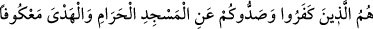
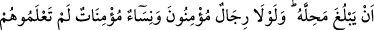
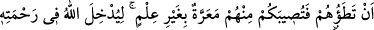

Senin Menât’ın nefsin olan puttan beteri yoktur.
Hucendî şöyle demiştir:
Kibir putunu kır! Ki âşıkların dininde
Bir put kırmak yüz ibadetten iyidir.
Müddeî, yârin kapısının mahremi değildir,
Ebû Leheb Kâbe’ye hâdim olamaz.
Fetih günü Rasûl-i Ekrem (s.a.), Safâ tepesine oturarak Mekkeliler’den bey’at aldı.
Yaşlılar, gençler, erkekler, kadınlar hepsi geldi ve müslüman olduklarına dâir
Rasûlullah (s.a.)’a bey’at ettiler. Yâni kelime-i şahâdet getirdiler ve İslâm’ın diğer
hükümlerine uyacaklarına söz verdiler. İnsanlar topluluklar halinde İslâm’a girdiler.
Rasûl-i Ekrem (s.a.), yirmi yıldır kendisine eziyet edenleri affettiği gibi, onlar için
Allah’tan mağfiret diledi. Ve şöyle buyurdular:
“– Ey insanlar, Allah, gökleri, yeri, güneşi, ayı yarattığı ve şu iki dağı yerleştirdiği
gün Mekke’yi haram kılmıştı ve kıyâmete kadar da haramlığı/mukaddesliği devam
edecektir. Allah’a ve âhiret gününe îmân eden birisi için burada kan dökmek, ağaç
kesmek kesinlikle helâl değildir. Zâten bu durum, ne benden önceki birisi için, ne de
benden sonraki birisi için helâl olmamıştır ve olmayacaktır. Benim için de sadece şu
anda[137] Mekke halkından bazılarına -Allah gadab ettiği için- helal kılınmıştır.
Dikkat edin, dün nasıl haram idiyse bugün de haramlığı aynen geri gelmiştir. Bu
söylediklerimi duyanlar, duymayanlara ulaştırsınlar.”[138]
Rasûl-i Müctebâ (s.a.) Efendimiz, Mekke’nin fethinden sonra orada 19 veya 18 gün
kaldı. Bu müddet zarfında dört rekâtlı farz namazları iki rekât olarak kıldı. Daha sonra
da, yukarıda anlatıldığı gibi, Hevâzin ve Sakîf kabilelerine doğru yola çıktı. Mekke’de
vâli olarak Attâb bin Esîd (r.a.)’i bıraktılar. Attâb (r.a.) o anda 21 yaşında bir
delikanlıydı. Rasûlullah o’na, insanlara namaz kıldırmasını emretti. Mekke’nin
fethinden sonra Mekke’de cemaate namaz kıldıran ilk emir de odur. Muâz bin Cebel
(r.a.)’i de sünnetleri ve fıkhı insanlara öğretmesi için Mekke’de bıraktı. Bu hâdiseyle
istihlâf olayı ortaya çıktı. Ve bugüne kadar da bu olay devam edegelmiştir. Çünkü
Efendimiz (s.a.)’in gönderilmesinden maksad cehâletin sona erdirilmesidir. Artık anla.
Allah (c.c.) sizi ve bizi vârislerden eylesin.